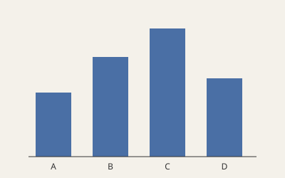
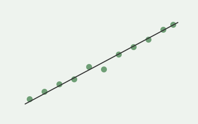

Code
x <- c(4, 8, 15, 16, 23, 42)
summary(x) Min. 1st Qu. Median Mean 3rd Qu. Max.
4.00 9.75 15.50 18.00 21.25 42.00A small, fast HTML format for Quarto websites and documents. It leaves out Bootstrap, Quarto’s JavaScript and icon fonts, and keeps listings, RSS, citations, cross-references, callouts and margin notes. Pages are many times smaller, and show their content sooner on a phone.
Install the extension in your project’s folder:
quarto add mvuorre/smol-htmlThen set the format in a website’s _quarto.yml, or in a document’s front matter:
format: smol-htmlsmol reads Quarto’s usual options, such as website.navbar, page-footer, toc and the callout options. Switching an existing site can take two more changes:
theme:, which brings Bootstrap back. Theme options such as mainfont and monofont do nothing in smol, and neither does highlight-style: smol has its own fonts and code colours.format: html: still renders with normal Quarto. Rename that key to smol-html:, or move the options to the top level of the front matter.embed-resources: true.google-scholar: true, reference managers such as Zotero save a page with its authors, date, DOI and journal.group switch on their own, not together.highlight-style, responsive grid classes such as .g-col-md-6 (their items stack), and the -left, -right and -inset column classes (they show at text width).quarto preview. If Quarto can’t find a browser, run quarto install chrome-headless-shell, or set mermaid-format: js to go back to Quarto’s default.date-format for another format.kbd shortcode and Mermaid diagrams (under 1 KB each), and section links (3 KB) on sites that turn anchor-sections on. smol can’t turn off the listing script.What smol does with ordinary Quarto content, with Quarto’s default options. Pages are light or dark following the reader’s system setting; there’s no toggle. The article shows scholarly front matter, citations and the margin.
Body text should be easy to read for a long time. This paragraph has bold, italic, struck out, small caps, H2O, E = mc2, inline code, a link to another page, an external link and a link to a heading. Keyboard keys: Ctrl-Shift-PCtrl-Shift-P.
A second paragraph shows how paragraphs follow each other. Long words and URLs must wrap instead of widening the page: Donaudampfschifffahrtsgesellschaftskapitänswitwe, https://example.org/a/very/long/url/that/goes/on/and/on/without/any/natural/place/to/break/it.
Simplicity is prerequisite for reliability.
— Edsger W. Dijkstra
# Simulate and summarise
set.seed(1)
x <- rnorm(100, mean = 10, sd = 2)
fit <- lm(mpg ~ wt + hp, data = mtcars)
if (mean(x) > 9) message("Large") else stop("Small")def summarise(values: list[float]) -> dict:
"""Return the mean and standard deviation."""
return {"mean": statistics.mean(values), "sd": statistics.stdev(values)}A long line scrolls inside its block:
very_long_function_name(argument_one = "a value", argument_two = "another value", argument_three = c(1, 2, 3, 4, 5, 6, 7, 8, 9, 10))analysis.R
library(ggplot2)
ggplot(mtcars, aes(wt, mpg)) + geom_point()These blocks copy the markup Quarto writes for executed code cells, so the demo needs no R or Python. The page sets code-fold: show.
x <- c(4, 8, 15, 16, 23, 42)
summary(x) Min. 1st Qu. Median Mean 3rd Qu. Max.
4.00 9.75 15.50 18.00 21.25 42.00warning("This is a warning")Warning: This is a warningInline math sits in the line: the sample mean estimates . A numbered equation, referenced as Equation 1:
A long equation scrolls instead of widening the page:


| Car | MPG | Cylinders | Horsepower |
|---|---|---|---|
| Mazda RX4 | 21.0 | 6 | 110 |
| Datsun 710 | 22.8 | 4 | 93 |
| Valiant | 18.1 | 6 | 105 |
A wide table scrolls:
| Model | Intercept | Slope | SE | t | p | R² | Adj. R² | AIC | BIC | N | Notes |
|---|---|---|---|---|---|---|---|---|---|---|---|
| Linear | 37.23 | −5.34 | 0.56 | −9.56 | < .001 | 0.75 | 0.74 | 166.0 | 170.4 | 32 | Weight only |
| Quadratic | 49.93 | −13.38 | 2.61 | −5.13 | < .001 | 0.82 | 0.81 | 158.0 | 163.9 | 32 | Adds weight² |
smol’s callouts show their type with colour and title, without icons.
A note without a title.
Tips suggest a better way to do something.
Warnings point out something that could go wrong.
Important callouts say what the reader must not miss.
Caution callouts are like warnings, but milder.
The content is hidden until the reader opens it.
No background.
Minimal appearance: no title and a plain border.
The first column. It has some text that is long enough to wrap onto several lines.
The second column. It also has some text that wraps onto several lines.
Pandoc’s own columns: a narrow one, 40% wide.
And a wide one, 60% wide.
Quarto’s CSS grid: a third of the width.
And two thirds. Pages use these g-col-* classes for side-by-side lists, such as jobs and degrees on a CV page.
Tabsets switch without JavaScript, using CSS alone:
mean(x)statistics.mean(x)smol draws Mermaid diagrams when rendering and includes them as SVG, so the page loads no Mermaid JavaScript.
On this page, footnotes go at the end, Quarto’s default.1 The article puts them in the margin.
| Page | Normal Quarto | smol |
|---|---|---|
| Home page, with code, math and a diagram | 1.4 MB (6.4 s) | 17 KB (0.9 s) |
| Article with math and citations | 612 KB (2.3 s) | 10 KB (0.8 s) |
| Blog page with a listing | 617 KB (3.7 s) | 17 KB (1.1 s) |
| Blog post | 365 KB (2.3 s) | 7.2 KB (0.8 s) |
Each cell is what the page downloads, then how long it takes to show its main content. Downloads are HTML, CSS and JavaScript (gzipped), and fonts, measured with Quarto 1.11.9. With normal Quarto, pages with math also download MathJax’s fonts, which aren’t counted. Times are to the largest contentful paint on a mid-range phone with slow 4G, from Lighthouse 13’s mobile settings (as in PageSpeed Insights), median of three runs, measured on 2026-11-25. Lighthouse rates every smol page 100 for performance. Normal Quarto runs 105 KB of JavaScript on a plain blog post; smol runs none.
This is a footnote.↩︎